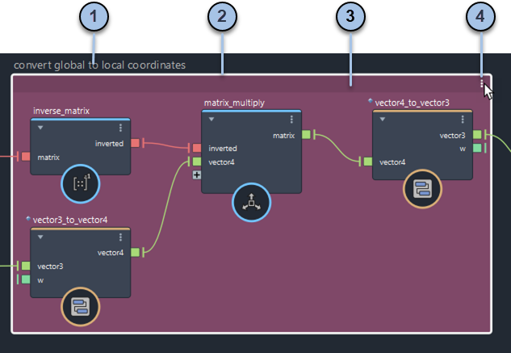
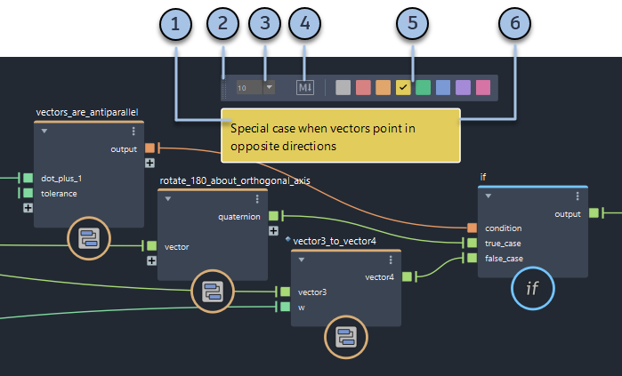
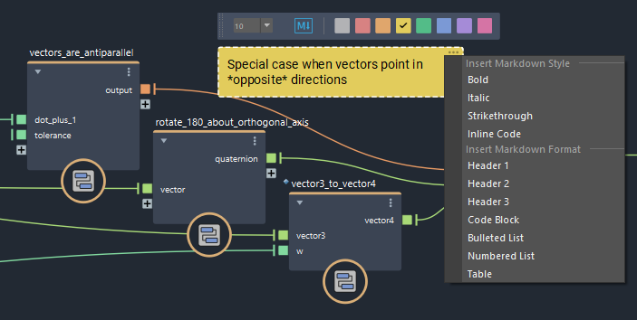

使用便笺和背景注释和组织节点
背景和便笺可帮助您组织和记录图表。
注意：
当您打开使用低于 2.6.0.0 版本的 Bifrost 创建的图表时，将转换先前样式的背景。如果文本较短，则直接转换背景。对于长文本和多行文本，将在背景中添加便笺。
背景
通过背景，可以直观地对节点进行分组，并轻松地将它们一起移动。移动背景时，背景内的所有节点都会移动。

- 双击要编辑的文本。完成后，按 Enter 键或单击背景。
- 拖动任何边或角以调整大小。
- 将鼠标悬停以显示栏。单击该栏以选择背景，然后拖动该栏以移动背景及其所有内容。
- 单击可显示用于设置背景颜色、更改文本显示大小等的菜单。
创建背景：
（可选）选择一些最初要包含在背景中的节点。
执行下列操作之一：
- 按 Shift+B。
- 在背景上单击鼠标右键，然后选择“创建背景”(Create Backdrop)。
- 从菜单中选择“创建 > 背景”(Create > Backdrop)。
- 使用“选项卡”(Tab)菜单添加
backdrop。
创建后，可以通过拖入的方式将节点和便笺添加到背景中，或通过拖出的方式将其移除。
便笺
便笺是彩色文本框，可用于描述图表的各个部分。

- 单击便笺内的任意位置以选择它，例如，将其拖动到新位置。在注释内部双击以编辑文本，完成后在外部的任意位置单击。
- 选择注释时，将显示格式栏。在您仍在编辑文本时，单击并拖动夹点以移动便笺。
- 选择字体大小。
- 启用或禁用 Markdown 格式设置。
- 选择背景色。
- 拖动垂直边以更改宽度。长度会随着您的键入而自动改变。
若要创建便笺，请执行下列操作之一：
- 按 Shift+S。
- 在背景上单击鼠标右键，然后选择“创建便笺”(Create Sticky Note)。
- 从菜单中选择“创建 > 便笺”(Create > Sticky Note)。
- 使用“选项卡”(Tab)菜单添加
sticky note。
便笺格式设置

若要使用 Markdown 设置便笺的格式，请执行以下操作：
- 在格式设置栏上激活 Markdown 图标。
- 在文本区域中手动键入 Markdown 格式，或单击右上角的 ... 以选择可以编辑的已设置格式的示例。
当您编辑时，文本区域中会显示 Markdown 格式代码，当您在文本区域外单击以完成编辑时，将使用对应的格式呈现便笺。
注意：
如果禁用 Markdown 图标，则格式代码将作为纯文本处理，并在便笺中始终可见。